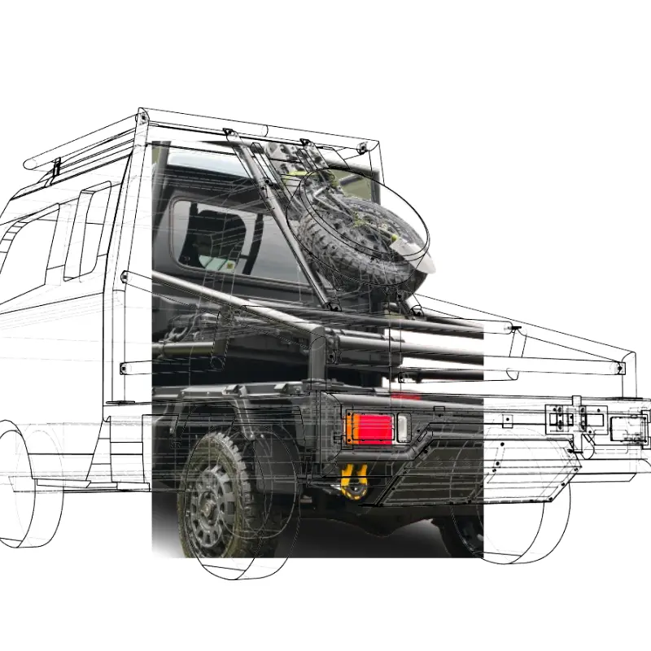
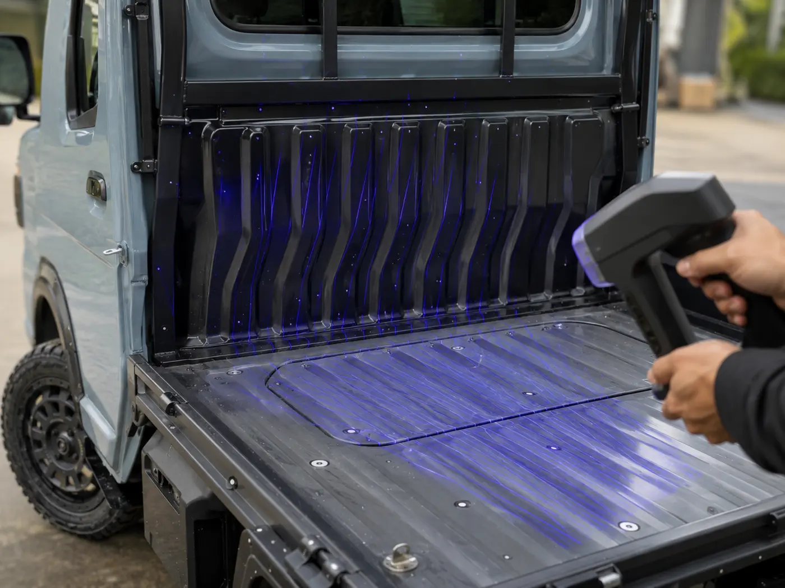
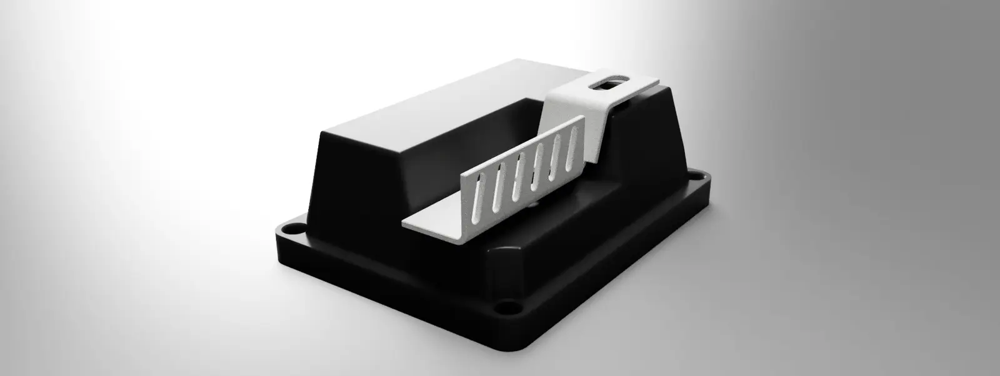
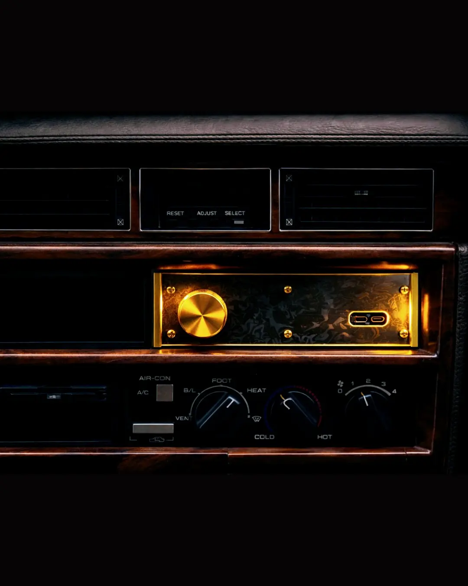
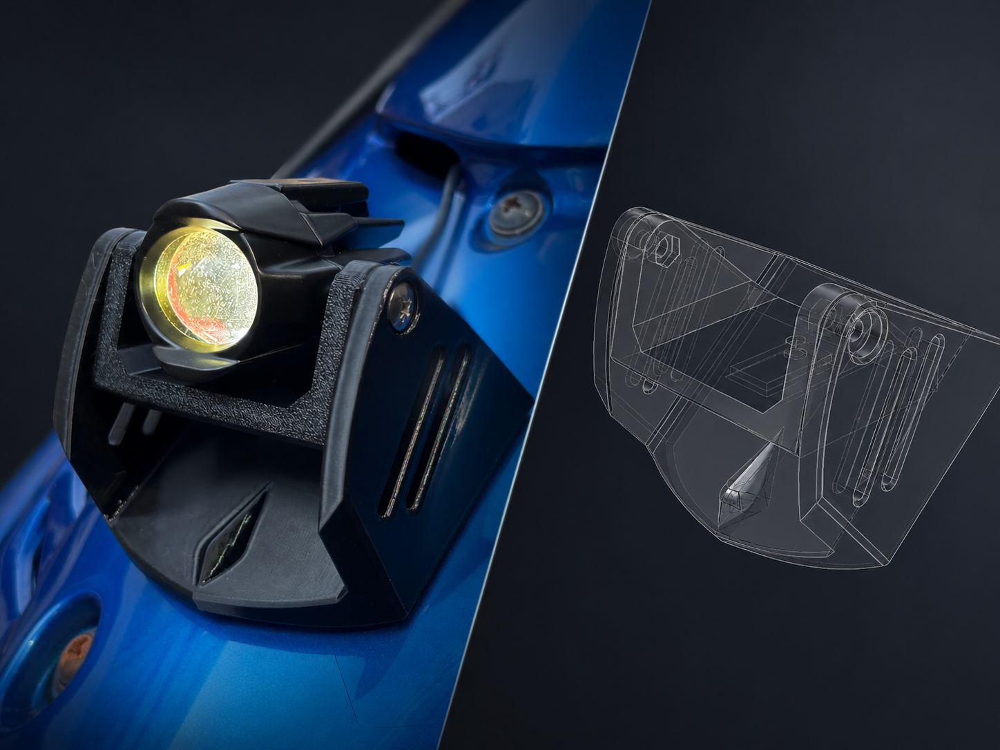
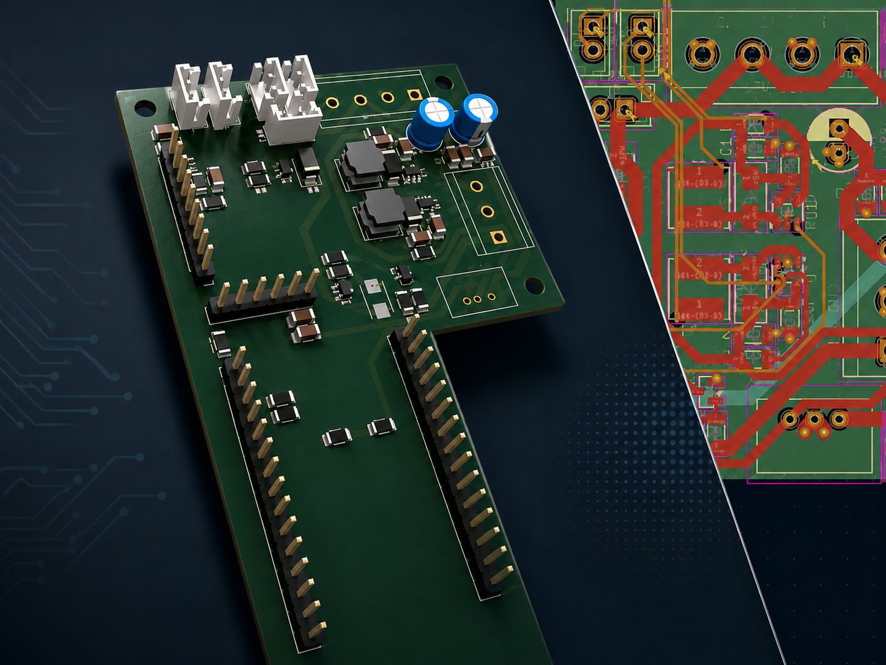

まず送る
写真・現物・図面・3Dデータのうち、用意できるものをお送りください。
一辺40cmを超える対象物は、原則として出張計測で対応します。
3D SCAN / CAD DESIGN / PROTOTYPE
現物やアイデアをもとに、
取付・使用条件と製造方法を整理。
設計・試作から、加工先との技術調整まで支援します。

WHAT WE DO
現物・用途・取付条件をもとに、既製品では対応しきれない部品や治具を設計します。生産終了部品の再現検討や、取付部品・試作品の設計も、計測・CAD・試作を通して製造に進める情報へ整えます。
FROM SCAN TO PART
形状取得から確認・設計・試作・製造準備までを支援します。

現物の曲面・取付面・外形・周辺形状を3Dスキャンし、メッシュデータとして取得します。
取得したメッシュから、穴・取付面・周辺形状の位置関係や、複雑な曲面の読み取り状態を確認します。
メッシュと実測情報をもとに、寸法確認・設計変更・加工検討に使えるCADへ再構築し、取付穴や固定構造を設計します。

用途、見た目、取付方法、製造方法を考慮し、希望イメージを反映しながら試作形状へまとめます。
3Dプリントで素早く形状を確認し、取付・干渉・使い勝手・見た目を確認します。

採用する製造方法と加工先の設備・条件を確認し、加工先からの指摘に応じて形状や製作用資料を調整します。
SELECTED WORKS
形状・取付・製法を横断して検討した、作例と自主開発の記録です。
設計・電装・取付・外観までを一体で検討した自社開発プロダクト。
取付面と周辺形状を読み取り、次の設計に使えるデータへ整える検討。
曲面形状や意匠面を含むカバー・外装部品の設計検討。
固定方法や曲げ加工を見据えた板金部品の設計検討。
取付位置や干渉を確認し、車両に自然に収まる形を検討。
作業や取付を補助するための形状を設計。

用途や設置条件に合わせた部品・什器の形状検討。

筐体、取付、配線まわりを含めた設計検討。
START WITH A CONVERSATION